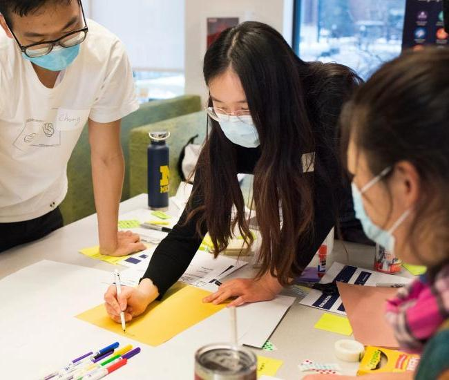
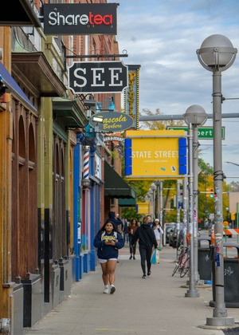

UMSI Student Life's Mission
UMSI Student Life's mission is to enrich each UMSI student's experience while cultivating an inclusive and welcoming community at the school. We are committed to enhancing student educational experiences through programs, services, and opportunities that develop skills and foster a positive and accessible environment for all UMSI students starting with orientation through graduation. While considering multiple aspects of the student experience, Student Life strives to engage every student across UMSI's academic programs through its pillars of student leadership, community, well-being and campus life.
Campus resources
 - UMSI Student Organizations (Connect with other students, learn new leadership skills, and find your community)
- Health and Wellness (Identify resources to support your overall health and wellbeing)
- UMSI Graduation (Celebrate this important milestone with your UMSI family)
- UMSI Events Calendar (Add this calendar to your Google calendar to view upcoming UMSI events)
Life in Ann Arbor
Life in Ann Arbor provides resources for students, including information about housing, parking, transportation, entertainment and life in Ann Arbor.
The Academic Programs and Student Life team
The Academic Programs and Student Life team is situated within the Office of Academic and Student Affairs. Our team leads a wide range of success-oriented work with and for current students at the School of Information (UMSI) across academic programs. We strive to enhance the student educational experience through programs, services, and opportunities that support academic success, develop skills, and foster a positive and accessible environment for all UMSI students starting at the point they matriculate to a UMSI program.